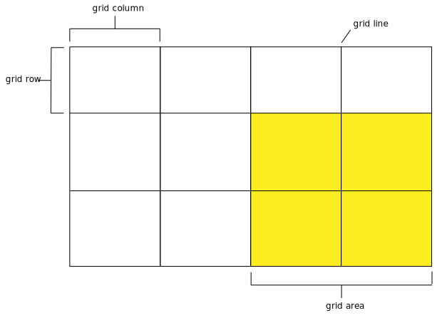
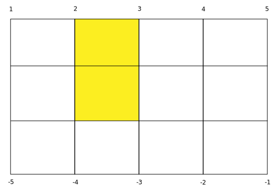

What is CSS Grid?
Grid is a new display method which allows a designer to lay out elements in two dimensions (horizontally, vertically).
Grid Terminology
Grid Terminology
Grid lines define a grid. These are numbered and can be named.
Grid columns are what is built out horizontally; rows are built out vertically.
A grid area is a mix of columns and rows. They must always be squares/rectangles (no tetris — odd-shaped — pieces).
Grid Lines
Grid lines are numbered starting at 1, left to right. Lines can also be identifies from right to left using negative numbers!
While the above graphic only shows line numbers for columns, the same concept applies for row lines.
Grid Tools
Once a grid has been defined in CSS, you can view it in the browser using Firefox's Web Developer Tools.
Go to Tools > Web Developer > Inspector.
In the right column, click Layout. Under the Grid section, click the checkbox on the element which has a grid to overlay the grid tools.
Additional settings exist to display line numbers and area names.
Defining a Grid
main {
display: grid;
grid-template-columns: 300px 300px 300px;
grid-template-rows: 20px 20px;
}
NOTE: The grid here is being applied to main, but a grid can be applied to any selector!
Defining a Grid, Part I
To define a grid, set the display property to grid.
Defining a Grid, Part II
Next, define the width/height of your columns/rows using the grid-template-columns and grid-template-rows properties. Each value defines a single column/row.
Unless you want rows to be a very specific size, defining a row is optional. The content will stretch the row to whatever size it needs.
Content on a Grid
What if you have more content than you have defined columns/rows? (For instance, five items to be placed in three columns.)
Content will always fill up the columns defined. When the row is complete, the remaining content will be placed on the next row.
Explicit & Implicit Grid
When we use grid-template-columns and grid-template-rows, we create an explicit grid.
If our content exceeds those definitions, it will still be placed on the grid according to the dimensions we provided. This is the implicit grid.
Applying Whitespace
Use grid-gap to apply whitespace equally on columns and rows.
Whitespace can also be applied to just columns using grid-column-gap and to just rows using grid-row-gap.
repeat()
If you are applying dimensions equally to columns/rows, there is a shorthand function which makes this easier:
grid-template-columns: repeat(3, 300px);
The first value passed to repeat is the number of columns (in this case), the second value indicates the dimensions.
Flexible Grids
A new unit has been introduced for use with grid: fractional units (fr)!
The browser determines what the dimensions of the container are, subtracts whitespace, then divides the grid columns accordingly. For instance:
main {
display: grid;
max-width: 960px;
grid-gap: 20px;
grid-template-columns: 1fr 1fr;
}
After subtracting 20px of whitespace, the browser will equally divide the remaining 940px equally between two columns (1fr 1fr).
When combined with the max-width property as in the previous example, our layout is flexible. It will adjust based on how much space a viewport — browser, tablet, mobile device — can offer.
Positioning Content
Content on a grid does not have to be confined to a single square on the grid. It can be stretched across or moved to other parts of the grid.
Identify the element to be moved/stretched. (You may want to apply an id to this element.) Then apply the grid-column or grid-row properties.
Positioning Content (cont'd)
#alpha {
grid-column: 2 / 3;
grid-row: 1 / 3;
}
In this example, we are saying "This element (#alpha) begins at (column) grid line 2 and ends at grid-line 3. Its row starts at (row) grid line 1 and ends at grid-line 3."
Options!
Using (positive) grid line numbers is not the only way to position content on a grid. We can:
- Use negative grid line numbers
- Use the
spankeyword to indicate how many columns/rows to stretch
These options are covered thoroughly in the 02-line-based-positioning example.
Grid Areas
Content can also be positioned on a grid by identifying content as grid-areas, then set up the grid-template-areas property.
This is covered thoroughly in the 05-grid-template-areas example.